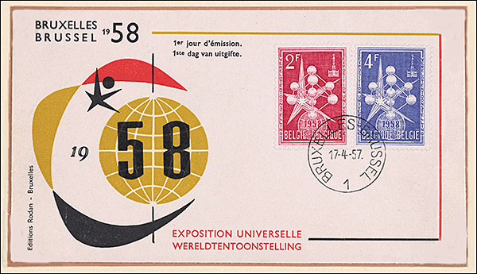
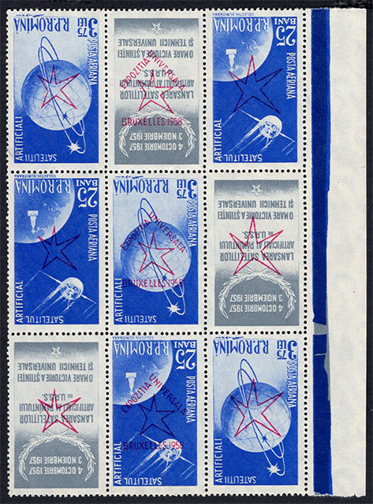
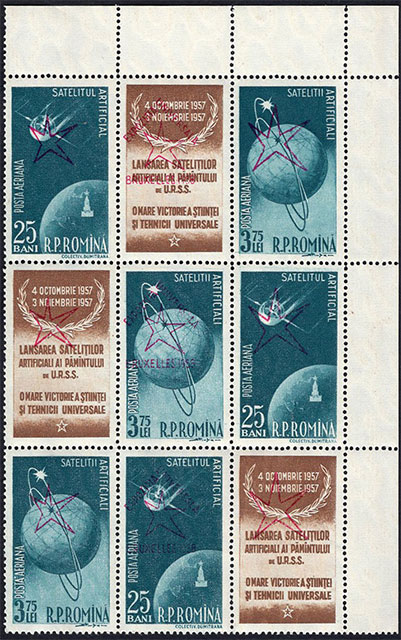
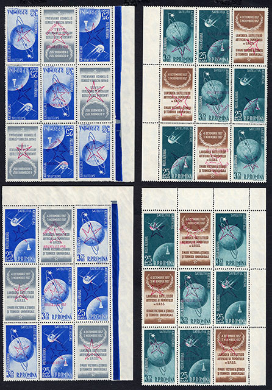

THE ROMANIAN OVERPRINTS AT THE BRUSSELS 1958 UNIVERSAL EXHIBITION
Victor Manta, PWO
Introduction
I became a collector of Romanian postage stamps about two years after the issuing of the set that is the subject of this article. Since it was no longer sold in the philatelic shops, I saw it for the first time at the collectors of the epoch, the set being offered at prices that largely exceeded my budget. This is the reason why I have been postponed the dealing with it. I did not know then that I was going to be in the possession of some interesting pieces that are part of this set much later, in 2014, when I started to be interested again in this special issue.
The 1958 Universal Exhibition in Brussels
This exhibition was the return to world exhibitions after an 18-year long interruption due to the WW2. The exhibition was held from 17 April to 19 October 1958 in the traditional exhibition area of the Belgian capital Brussels. It was visited by 42 millions people, which means largely over the almost 9 millions populations of Belgium in 1958.
On its occasion, the famous Atomium, 102 m high, was built and consisted of 9 spheres with a diameter of 18 m each, connected to form an image of an iron atom, increased 65 billion times. This image appears on the commemorative stamp issued by the host of the exhibition, Michel No. 1091, Fig. 1. The entry fee was of 40 Belgium Francs, about 1 US$.

Fig. 1. The Atomium on the Belgium 1958 stamp

Fig. 1.1. Belgium Brussels Expo 1958 FDC
A beautiful series and a souvenir sheet, both dedicated to the exhibition, were issued on the day of its opening by Hungary, Mi. 1519 - 1526, Mi. Block 27. Below you can see one of the well-known sculpture from Brussels, the Manneken Pis, due to Hiëronymus Duquesnoy the Old and inaugurated in 1618 - 1619.

Fig. 2 . The Manneken Pis on an Hungarian stamp
The so called cold war between the the two superpowers of the moment run peacefully in this exhibition, in two pavilions of the US and the USSR that were facing each other. The Soviets presented in the center of their impressive pavilion a copy of Sputnik I, as well as other technological and scientific achievements. The Americans answered by focusing on consumer goods, an impressive fashion show, as well as their new IBM 305 RAMAC computer, one of the latest models with electronic valves, but the first one with two hard disks, the whole equipment weighing a ton. In Fig. 3 and Fig. 4 I show the stamps of the Soviet pavilion (Mi. 2068) and of the American one (Mi. 724), issued by the respective countries on (or around) the April 17, 1958.
 Fig. 3. The USSR pavilion at Brussels 1958 |
 Fig. 4. The USA pavilion at Brussels 1958 |
The presence of Romania
Romania, that was following the directives decided two years ago in Moscow, should have shown its achievements in its own pavilion. This goal has not been reached, the Western countries being blamed for the building costs, considered then prohibitive. The Romanian representatives were finally sheltered, together with other countries in the same situation, in the grand pavilion of the United Nations, which we show in Fig. 5. At the top left you can see a small part of the Atomium.

Fig. 5. The pavilion of the United Nations, and Atomium on the left
The philatelic activity of Romania at the Expo '58
The Expo '58 has enjoyed an exceptional visiting success. Throughout its duration, it has been visited by more than 40 million people, and on its first day over 700,000 have crossed its gates. At the stands of Romania, as opposed to those of other dozens of exhibitors, no Romanian philatelic materials dedicated to the event was offered, which of course did not escape the "comrades with responsible positions", sent for various reasons on the spot by the Romanian government. It was obvious to them that the sale of such "paperwork" by other countries was a much simpler way of getting the most wanted convertible currency than selling to the West agricultural products, food, or even tens of thousands of people living in the popular republic and who wanted to emigrate.
As a result, some "smart boys" from the General Directorate of the Post Office were asked to find a simple, cheap and quick solution to the problem. Under pressure, they came with a "genial one", namely to overprint the 2,593 unsold sheets of the 1957 "Artificial Earth Satellites" issue, which I dealt with in my previous article. This issue was "suitable" for the proposed purpose, as it appeared to be "A great victory of universal science and technique" (according to the vignette/Tab text of the issue), even though it underlined Romania's satellite position with respect to its great neighbor and "liberator" from the East. The Belgian "local color", which, incidentally or not, was red (the color of USSR flag), was used for overprinting. For this purpose, the very beautiful logo of the exhibition, which we show in Fig. 6, was "creatively used" by the Romanian post.

Fig. 6. The poster of the exhibition
The Romanian overprints were sold at the Brussels 1958 exhibition, starting from the third month of the exhibition. The stamps were issued on 17 April 1958, and they were sold out by the end of July. However, they were reissued in September, and they were sold until the end of the exhibition in October. The unsold pieces were partially cancelled (CTOs) and many of them were sold in Romania too.
The Expo '58 Brussels stamp issue in Romania
From the article of Mr. Popovici, mentioned again below, we find out that the distribution of the issue at the offices and the philatelic counters in Romania was done only in triptychs (triplets), these being extracted from the printed sheet either horizontally or vertically. Thanks to this piece of information I understood why, unlike the distribution made in Brussels at the exhibition, I couldn't see in Romania larger units, simply because these could not be officially bought in Romania. This may explain also why I nevertheless could find larger blocks abroad, where they were sold either at the exhibition or by the Romanian foreign trade. We, the Romanian stamp collectors of that time, did not wonder too much of this anomaly, being accustomed to deprivations of all kind.
Positioning of the overprinted triptics
I start by showing you CTO (Cancelled to Order) triptics, with cancellations that display the day when the issue was put into circulation, that is, on July 12, 1958. As mentioned above, this date is by more than three months delayed over the one when the exhibition opened its doors and for which dozens of other postal administrations came prepared with their production, as we have shown before in Fig. 1 to Fig. 4.

Fig. 7. CTOs obliterated with first day of issue cancellation
Those who read my previous article can remember that the printed sheet of the Artificial Satellites I and II was relatively complex, because the lines 4, 5 and 6 were reversed relatively to the rest of others. Although all overprints have been applied in the same direction, it has resulted that some overprinted lines of the sheet appeared to have been rotated over the underlining images. In fact, of course, the images that were overprinted were reversed in relation to the overprints. To have an overview of the structure of the printed sheet, I present in Table 1 a schematic view of the whole printed sheet. This image will help me to correctly position the blocks to write this article. Of course, the table can serve to anyone to position/map any part of the respective triptics, this being the main reason why I compiled it.
9 |
.25-T-3.75 N |
.25-T-3.75 N |
.25-T-3.75 N |
.25-T-3.75 N |
.25-T-3.75 N |
.25-T-3.75 N |
.25-T-3.75 N |
.25-T-3.75 N |
.25-T-3.75 N |
8 |
T-3.75-.25 N |
T-3.75-.25 N |
T-3.75-.25 N |
T-3.75-.25 N |
T-3.75-.25 N |
T-3.75-.25 N |
T-3.75-.25 N |
T-3.75-.25 N |
T-3.75-.25 N |
7 |
3.75-.25-T N |
3.75-.25-T N |
3.75-.25-T N |
3.75-.25-T N |
3.75-.25-T N |
3.75-.25-T N |
3.75-.25-T N |
3.75-.25-T N |
3.75-.25-T N |
6 |
3.75-T-.25 Inv |
T-3.75-.25 Inv |
.25-T-3.75 Inv |
3.75-T-.25 Inv |
3.75-T-.25 Inv |
3.75-T-.25 Inv |
3.75-T-.25 Inv |
3.75-T-.25 Inv |
3.75-T-.25 Inv |
5 |
.25-3.75-T Inv |
.25-3.75-T Inv |
.25-3.75-T Inv |
.25-3.75-T Inv |
.25-3.75-T Inv |
.25-3.75-T Inv |
.25-3.75-T Inv |
.25-3.75-T Inv |
.25-3.75-T Inv |
4 |
T-.25-3.75 Inv |
T-.25-3.75 Inv |
T-.25-3.75 Inv |
T-.25-3.75 Inv |
T-.25-3.75 Inv |
T-.25-3.75 Inv |
T-.25-3.75 Inv |
T-.25-3.75 Inv |
T-.25-3.75 Inv |
3 |
.25-T-3.75 N |
.25-T-3.75 N |
.25-T-3.75 N |
.25-T-3.75 N |
.25-T-3.75 N |
.25-T-3.75 N |
.25-T-3.75 N |
.25-T-3.75 N |
.25-T-3.75 N |
2 |
T-3.75-.25 N |
T-3.75-.25 N |
T-3.75-.25 N |
T-3.75-.25 N |
T-3.75-.25 N |
T-3.75-.25 N |
T-3.75-.25 N |
T-3.75-.25 N |
T-3.75-.25 N |
1 |
3.75-.25-T N |
3.75-.25-T N |
3.75-.25-T N |
3.75-.25-T N |
3.75-.25-T N |
3.75-.25-T N |
3.75-.25-T N |
3.75-.25-T N |
3.75-.25-T N |
/ |
A |
B |
C |
D |
E |
F |
G |
H |
I |
Mapping 1
We will begin by placing on the table the triptych shown in the Fig. 7. It seemed obvious to place the "UNIVERSAL EXHIBITION" inscription of the overprint, which has a form of an arrowhead, in the "up" direction . We will proceed in the same way in the future, when things could appear less obvious. It is noticeable that, due to the selvage of the triptych that appears at the bottom of the table, this triptych is one of the 9 triptychs positioned on the row 1 of the table. The total frequency of these triptychs is 9/81, or 11 % of the total of 210.033 complete triptychs series. Probably not all of them survived with selvage, or at all.
Mapping 2
Another relatively simple example is shown in Fig. 8.

Fig. 8. Three triptics with N overprints
It is a vertical block of 3 overprinted triptychs, marked in Table 1 with the letter "N", from Normal (not inverted). They can only appear in the 3 + 2 + 1 or 9 + 8 + 7 rows, a total of 6 blocks of 3 triptychs, out of a total of 9 such blocks on the sheet.
Mapping 3.1
In Fig. 9 we have a situation that seems a bit more confusing, because apparently, we do not know where the is the top and where is the bottom.

Fig. 9.1 Three triptics with Inv overprints
In accordance with the above advice, I positioned the three triptychs block so that the arrow made up of the "Universal Exhibition" inscription points up. It is now easy to see that these blocks can only come from lines 6 + 5 + 4, marked Inv, from Inverted. It can be inferred that the number per the printed sheet of these blocks of 3 triptychs is a half of the blocks shown in Fig. 8.
Mapping 3.2

Fig. 9.2 Three triptics with Inv overprints, with right selvage
Above is shown a similar bloc but with selvage. It can only come from the lines 6 + 5 + 4, marked Inv, from the right position. The initial number of these triptychs was the same as the number of overprinted full sheets, i.e. 2,593 but after the most of full sheets were separated into smaller parts, probably 100 - 200 pieces survived, making them rare and sought after.
Mapping 3.3
This is the easiest bloc to map because it has selvage above and along the right side.

Fig 9.3 Three triptics with N overprints, with right and upper selvage
Its position can be only in the right upper corner of the full printed sheet. Normally, it should be valued, with its identical blue sibling (not shown) at over the 3 x 80 = 240 Euro (Michel CV) because it consists of three triptics and appears only one time on the full printed sheet.
Mapping 4
In Fig. 10 and Fig. 11 we probably show the most interesting combinations, namely those in which we have two triptics in a block of two, one of which with a normal and the other with an inverted overprint.

Fig. 10. Two triptics in a block of two, with a N and an Inv overprint
By correctly orienting the tête - bêche block, which appears with the left selvage of the sheet, we find that for the one shown in the Fig. 10 there is only one position left to match in Table 1, namely A4 + A3. It is, in fact, 1 of the 9 possible positions if it had no selvage. The number of these triptychs was the same as the number of overprinted full sheets, i.e. 2,593.
Mapping 5

Fig. 11. Two triptics in a block of two, with a N and an Inv overprint
The pseudo-pair of the block in Fig. 10 is shown in Fig. 11, and it is also a unique tête - bêche block on the full sheet, positioned I7 - I6 in the Table 1. I called them pseudo-pairs because one is from the left section of the printed sheet and the other one from its right section.
An idea about scarcity and prices
We are certainly confronted with an issue where a lot of combinations are scarce or even rare. It can be assumed that out of the combinations shown in Fig. 7 to Fig. 10 there are no more than a few hundred pieces of each left.
A pair of N unused (postfrisch) triptychs is listed in the Michel catalog at 80 Euro, and one with an Inv overprint is listed 140 Euro. Tête - bêche unused pairs, like those in Fig. 9 and Fig. 10, are listed together in Michel at 300 Euro, that means 80 Euro more than the N and INV physically separated pairs of 3. For the (bigger) combinations, we only can infer their prices by comparing them with the listed ones.

Fig. 11-1. A mix of N and Inv triptics in blocks of three
For example a set of three triptics per block, with normal and inverted overprints (see above), should value at least (80 + 140) x 3 = 660 Euro, which is a considerable amount. Of course the catalogue values (CV) are not sale ones, what any experienced stamp collectors knows, but nevertheless the result is impressive. Add to these ones the triptics shown in Fig. 10 and 11 and you could have practically all interesting combinations, with a CV slightly under 1000 Euro, an irresistible and valuable mix for a passionate stamp collector of scarce modern Romanian stamps.
Just for comparision, the biggest mint block of Romanian triptics overprints sold on the internet is a block of 10, which was sold for €3,000 in 2018. A block of 9 was sold also on the internet for €2,500 in 2017, and a block of 8 was sold for €1,800 in 2016. Source: Bard.
First Day Covers (FDC)
In this area, there is an excellent article on the Web, from which I will only quote its conclusions: "The two FDC set of the Brussels Universal Exhibition 1958 was cancelled with one of the special cancels, considered strange by the collectors, because they present neither the date of putting into circulation nor the "First day of the issue" mention. The cancellation is attested as "Brussels" and not the territory of the issuing state (Romania), as warned by the rules of the Universal Postal Union.” The source is not anymore available on the web, unfortunately.

Fig. 12. A First Day Cover of the issue
Thus, we find that in the field of FDCs (as the one shown on Fig. 12) reigned the same spirit of improvisation and of rush for easy gains, as it was in the field of postage stamps.
Watermarks
I presented the used watermarks (taken from the Romanian Postage Stamps Catalog, 1974) in the previous article (see the link at the end of the article), where I show an example of the usage of the watermark XVII.
 Fig. 13 . The watermark shown in the catalogue |
 Fig. 14. The image of watermark |
 Fig. 15. The tryptic's face |
In Fig. 13 appears the watermark XVIII, and in Fig. 14 that of the processed image reverse of Fig. 15, in which I highlighted, using image processing techniques, the watermark embedded in the paper structure.
A philatelic curiosity, reconstituted
I owe to Mr. Cornelius Ionescu the opportunity to read the very interesting article of Eng. Mihail Popovici, entitled "A common, but rarely encountered variety of the philatelic issue ARTIFICIAL SATELLITES OF THE EARTH with the overprint BRUSSELS UNIVERSAL EXHIBITION 1958". This article appeared in the 1980 Philatelic Almanac, edited by Rompresfilatelia. From this article I learned that some "ultra-smart boys" (the term belongs to me) had the idea of introducing in the overprinting device sheets, which they had previously rotated horizontally by 180 degrees when compared with what was done legally earlier. Who they were, where they took the sheets, and how did they have access to the overprinting facility will probably remain a well-kept secret, even if the facts have been pardoned in the meantime by the law.

Fig. 16 A full printed sheet of illegal reversed overprints
By Internet I got in touch with Mr. Nicolae Costan from Romania, who sent me (many thanks!) the image of a vertical block of 6 such triptychs. I used it to restore the image of those few (?) sheets that were undercover printed. I suppose that I am the first one to have published it.
The picture (Fig. 16) is of general philatelic interest, but it could ever serve the few who possess or would take possession of this rare material. I remind that those full sheets were overprinted without the permission of the Romanian postal authorities. For this reason, they cannot be exhibited at the International Federation of Philately (FIP) sponsored exhibitions and it is unlikely that they will ever be listed by any serious international catalog.
Link to the page about the not overprinted version of this issue that can be found here.
The first version of this article was published, in Romanian, in the magazine philatelica.ro, No. 1 (36) of January-March 2015, on pp. 2 - 5, on the first cover and on the p. 14.